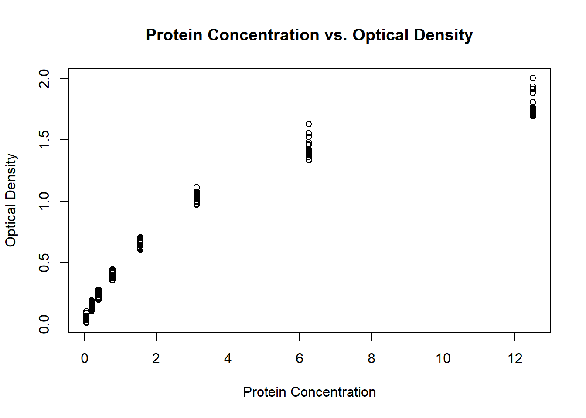

rm(list = ls()) # Removes all objects from the environment.Biostatistics-Lab1
Q1.
We believe the sampling strategy used was “snowball” sampling because the researchers asked the study individuals to recruit other individuals they knew with the same condition.
We could obtain a database of every student at Colgate, then use a random number generator to select random students. The bias that goes with this true random sample is it’s ability to leave out minority populations. We assume that every student (the population of the study) is available via this database.
Independent: Gender of the individual, Dependent: Feeling of eyestrain
Independent(gender): Nominal, Dependent(eye strain): Ordinal
The rank of 3.7 would 3.5 because it’s between ranks 3 and 4.
Q2.
(429 + 7) / 28[1] 15.57143cos(0.782)[1] 0.7095056log(2.5) + 30[1] 30.91629(27.5) / (16 / 3.6)[1] 6.1875log(3, base = 10)[1] 0.4771213(9^2 - 1) / 10 [1] 8exp(3)[1] 20.08554Q3.
diam_area <- function(d){
r <- d/2
area <- r^2 * pi
return(area)
}
diam_area(12)[1] 113.0973circles <- c(1.2, 2.3, 3.4, 4.5, 5.6, 6.7, 7.8, 8.9, 9, 10.1)
diam_area(circles) [1] 1.130973 4.154756 9.079203 15.904313 24.630086 35.256524 47.783624
[8] 62.211389 63.617251 80.118467Q4.
library(datasets)
DNase <- DNase
plot(DNase$conc, DNase$density,
main = "Protein Concentration vs. Optical Density",
xlab = "Protein Concentration",
ylab = "Optical Density")
Figure 1: This plot shows the protein concentration of rat serum against optical density
Q5.
soils <- data.frame(SiteName = c("DGC1", "DGC2", "Ship1", "Ship2", "Alice Holt", "Drayton", "Snowdon"),
LandUse = as.factor(c("P", "M", "M", "P", "W", "P", "P")),
SoilpH = c(5.49, 5.3, 6.33, 5.38, 4.93, 6.54, 6.04),
P = c(1150, 286, 2010, 992, 365, 2010, 531),
S = c(756, 1600, 1810, 575, 404, 1190, 687),
Ca = c(1690, 3390, 10500, 3440, 1650, 35000, 1020),
Se = c(1.98, 2.56, 2.39, 0.457, 0.491, 0.501, 1.4))- Already converted to in part a.
library(tidyverse)── Attaching core tidyverse packages ──────────────────────── tidyverse 2.0.0 ──
✔ dplyr 1.1.4 ✔ readr 2.1.5
✔ forcats 1.0.0 ✔ stringr 1.5.1
✔ ggplot2 3.5.1 ✔ tibble 3.2.1
✔ lubridate 1.9.4 ✔ tidyr 1.3.1
✔ purrr 1.0.4
── Conflicts ────────────────────────────────────────── tidyverse_conflicts() ──
✖ dplyr::filter() masks stats::filter()
✖ dplyr::lag() masks stats::lag()
ℹ Use the conflicted package (<http://conflicted.r-lib.org/>) to force all conflicts to become errorssoils <- soils |>
arrange(SoilpH)
print(soils) SiteName LandUse SoilpH P S Ca Se
1 Alice Holt W 4.93 365 404 1650 0.491
2 DGC2 M 5.30 286 1600 3390 2.560
3 Ship2 P 5.38 992 575 3440 0.457
4 DGC1 P 5.49 1150 756 1690 1.980
5 Snowdon P 6.04 531 687 1020 1.400
6 Ship1 M 6.33 2010 1810 10500 2.390
7 Drayton P 6.54 2010 1190 35000 0.501mSe <- soils |>
group_by(LandUse) |>
summarise(mean.selenium = mean(Se))
print(mSe)# A tibble: 3 × 2
LandUse mean.selenium
<fct> <dbl>
1 M 2.48
2 P 1.08
3 W 0.491pasture <- soils |>
filter(LandUse == "P")
print(pasture) SiteName LandUse SoilpH P S Ca Se
1 Ship2 P 5.38 992 575 3440 0.457
2 DGC1 P 5.49 1150 756 1690 1.980
3 Snowdon P 6.04 531 687 1020 1.400
4 Drayton P 6.54 2010 1190 35000 0.501newsoils <- soils |>
mutate(P = sqrt(P))
print(newsoils) SiteName LandUse SoilpH P S Ca Se
1 Alice Holt W 4.93 19.10497 404 1650 0.491
2 DGC2 M 5.30 16.91153 1600 3390 2.560
3 Ship2 P 5.38 31.49603 575 3440 0.457
4 DGC1 P 5.49 33.91165 756 1690 1.980
5 Snowdon P 6.04 23.04344 687 1020 1.400
6 Ship1 M 6.33 44.83302 1810 10500 2.390
7 Drayton P 6.54 44.83302 1190 35000 0.501Q6.
Sepal.length, Sepal.width, Petal.length, and Petal.width are all continuous variables. Species is a factor and a nominal variable with three different levels: “setosa”, “versicolor”, and “virginica”.
iris <- iris
head(iris) Sepal.Length Sepal.Width Petal.Length Petal.Width Species
1 5.1 3.5 1.4 0.2 setosa
2 4.9 3.0 1.4 0.2 setosa
3 4.7 3.2 1.3 0.2 setosa
4 4.6 3.1 1.5 0.2 setosa
5 5.0 3.6 1.4 0.2 setosa
6 5.4 3.9 1.7 0.4 setosairis <- iris |>
arrange(Sepal.Length)iris.sum <- iris |>
group_by(Species) |>
summarise(mean.sepal.length = mean(Sepal.Length),
mean.sepal.width = mean(Sepal.Width),
mean.petal.length = mean(Petal.Length),
mean.petal.width = mean(Petal.Width))setosa <- iris |>
filter(Species == "setosa")Additional Exercise.
Q7.